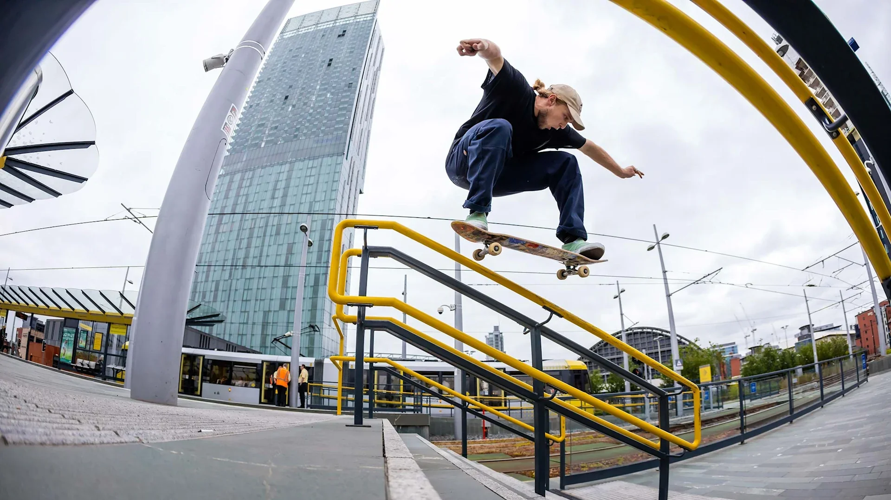
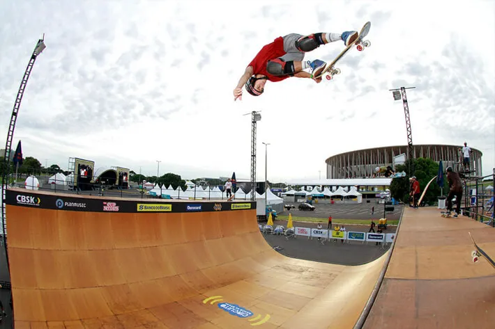
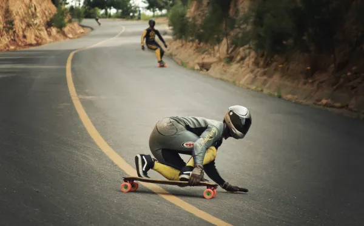

1°
Skate street
O skate street é resultado da prática do skate em meio aos objetos e obstáculos que compõem o cenário urbano, tais como: escadas, corrimões, bancos, hidrantes e guias. É a modalidade mais popular do skate em todo o mundo, inclusive está presente nas Olimpíadas.
2°
Skate vertical
O skate vertical é realizado em pistas fabricadas em madeira ou concreto que apresentam paredes e transições. A modalidade não é tão popular quanto o street, uma vez que exige mais experiência e técnica para executá-la. Veja as subdivisões do vertical:
Bowl: pistas semelhantes a piscinas arredondadas com 3 metros de profundidade e paredes que formam 90º em relação ao chão. É o tipo de pista mais comum em parques ao ar livre de skate, utilizada para manobras com velocidade.
Half-pipe: pistas em formato de “U” com cerca de 4 metros de altura.
3°
Freestyle
O freestyle é a mais antiga das modalidades do skate. As manobras são utilizadas no solo sem o uso de obstáculos.
4°
Downhill
O downhill é a modalidade de skate em que os praticantes descem ladeiras e executam manobras chamadas de slides.
Downhill: com o uso de um skate maior, chamado de longboard, nessa modalidade os skatistas descem ladeiras com a realização de manobras slides. Devido ao formato diferente do objeto, os praticantes conseguem realizar movimentações diferentes.
Downhill stand-up: descida de ladeira, morro ou qualquer terro que possua inclinação da forma mais rápida possível utilizando técnicas de curva e para aumentar a velocidade do skate.
Downhill slide: rodas mais duras e escorregadias são utilizadas nos skates, que realizam as manobras de slides também ao descer ladeiras. Há semelhança no objeto com o que é utilizado no street.